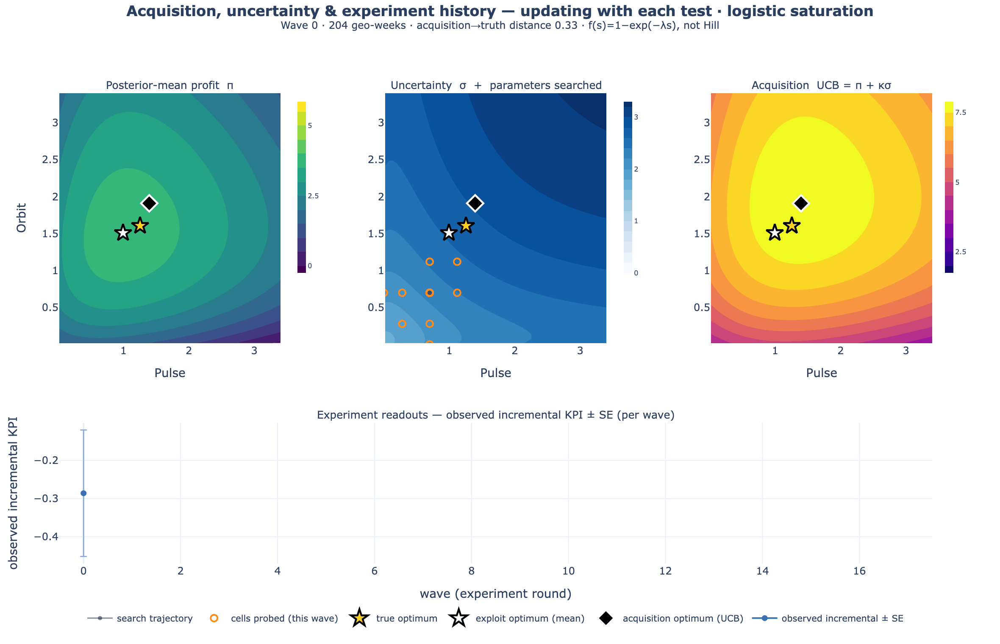

Continuous learning · mathematical foundations
A precise, code-faithful derivation of the continuous-learning loop, grounded in
Bayesian Optimal Experimental Design (BOED). This page is the technical companion to the
narrative overview: it states the model, the acquisition functions, and
the stopping rule as equations, and maps each one to the function in
mmm_framework.continuous_learning that implements it.
The loop solves two coupled decision problems at once. Let the media plan be an allocation \( a = s \in \mathbb{R}_{\ge 0}^{K} \) over \( K \) channels, and let \( \theta \) collect the unknown parameters of the response surface. Given a prior \( p(\theta) \) and experiment history \( h_{t-1} = \{(\xi_k, y_k)\}_{k<t} \):
The allocation decision
Choose \( a \) to maximise expected profit under current beliefs, \( a^\star = \arg\max_a \mathbb{E}_{p(\theta \mid h_{t-1})}[\,v(a,\theta)\,] \), where \( v(a,\theta) \) is the terminal payoff (profit) of running plan \( a \) in a world with parameters \( \theta \).
The experiment decision
Choose the next design \( \xi_t \) — which geos run which spend cells — to be worth its cost: most informative about \( \theta \) (an information objective), or most likely to change what we would do (a decision objective). These can rank designs differently.
The first problem is Bayesian decision theory; the second is BOED. The framework's contribution is a Gaussian/Laplace realisation of both that needs no per-candidate refit, so the loop can price many candidate experiments in milliseconds. We build the theory first, then show the exact linear algebra the code runs.
Notation
\( \theta \) — latent target (here the surface parameters \( \beta,\kappa,\alpha,\gamma \)); it need not be all model parameters. \( \xi \) — a design (the cell matrix of a wave). \( y \) — outcome. \( p(y\mid\theta,\xi) \) — likelihood; \( p(y\mid\xi)=\mathbb{E}_{p(\theta)}[p(y\mid\theta,\xi)] \) — the marginal (predictive). \( \mathrm{H}[\cdot] \) — differential entropy. \( \mathrm{KL}(\cdot\,\|\,\cdot) \) — Kullback–Leibler divergence. \( I(\theta;y\mid\xi) \) — mutual information under design \( \xi \).
Expected information gain
The canonical BOED objective is expected information gain (EIG): the expected reduction in uncertainty about \( \theta \) from running \( \xi \), averaged over outcomes we have not yet seen. Writing the joint \( p(\theta,y\mid\xi)=p(\theta)\,p(y\mid\theta,\xi) \),
This single quantity has four equivalent readings, each useful in a different regime:
The Bayesian-optimal design is \( \xi^\star=\arg\max_{\xi\in\Xi}\mathrm{EIG}(\xi) \). The posterior form is cheap when \( \dim(\theta)\ll\dim(y) \); the likelihood form when \( \dim(y)\ll\dim(\theta) \).
Lindley's information measure (origin)
Lindley (1956) defined the average information an experiment provides as \( \mathcal{I}(\mathcal{E},p(\theta)) = \mathrm{H}[p(\theta)] - \mathbb{E}_x\,\mathrm{H}[p(\theta\mid x)] \) — exactly Eq. (1) — and proved it is non-negative (zero iff \( p(x\mid\theta) \) does not depend on \( \theta \)), additive across independent stages (the chain rule that makes sequential design coherent), and invariant under one-to-one reparameterisation of the average. It is the expected utility of an experiment under the log-score (information) utility \( U(\xi,\theta,y)=\log p(\theta\mid y,\xi) \); general BOED replaces this with any posterior-functional utility, recovering the EIG as the information special case.
Lindley 1956, Defs. 1–2, Thms. 1–2; Rainforth et al. 2023, §2.1.
Why the EIG is hard — and the honest cost of estimating it
The EIG is doubly intractable: the outer expectation is over the marginal \( p(y\mid\xi) \), which is itself the intractable integral \( \int p(y\mid\theta,\xi)\,p(\theta)\,d\theta \) inside the log. A naïve single-loop Monte-Carlo estimate of the likelihood form fails because each \( \log p(y_n\mid\xi) \) is a fresh nested integral. The Nested Monte Carlo (NMC) estimator approximates each inner marginal with \( M \) prior draws:
Jensen's inequality makes the log biased for any finite \( M \): the bias is \( \mathcal{O}(1/M) \) and the mean-squared error is \( \mathcal{O}(a/N + b/M^2) \). Balancing the two terms at a fixed compute budget \( C=NM \) forces \( M\propto\sqrt{N} \) and yields a root-MSE of only \( \mathcal{O}(C^{-1/3}) \) — strictly worse than the \( \mathcal{O}(C^{-1/2}) \) of ordinary Monte Carlo. This \( C^{-1/3} \) wall is the reason modern BOED reaches for variational, contrastive, or — as here — Gaussian/Laplace estimators.
Rainforth et al. 2023, §3.1; Rainforth et al. 2018.
Variational and contrastive bounds (the modern toolkit)
Because the EIG is a mutual information, any MI bound is an EIG estimator. Two are worth stating, because they frame the design-space in which our Gaussian estimator is a fast special case. The Barber–Agakov posterior lower bound learns a variational posterior \( q_p(\theta\mid y,\xi) \):
tight iff \( q_p \) is the true posterior. Prior Contrastive Estimation (PCE) needs no learned network — it contrasts the true parameter against \( L \) prior draws (note the original draw \( \theta_0 \) appears in the denominator, which is what turns an upper bound into a valid lower bound):
which is monotone increasing and tight as \( L\to\infty \) (its learned-proposal generalisation, Adaptive Contrastive Estimation, is the InfoNCE bound with the likelihood as the known-optimal critic). These bounds are what make design optimisation differentiable enough for stochastic gradient ascent on \( \xi \).
Where this framework sits
The continuous-learning loop has a low-dimensional \( \theta \) (a handful of channel parameters) and needs to price many candidate waves per round, fast. So instead of learning a variational network per design, it uses the Gaussian special case of the EIG — exact for linear-Gaussian models and a Laplace approximation otherwise — which reduces Eqs. (1)–(2) to a closed-form \( \tfrac12\log\det \) with no Monte-Carlo inner loop at all (§D-optimal EIG). The contrastive machinery above is the route you would take if \( \theta \) were high-dimensional or the likelihood implicit.
The generative model — surface and likelihood
Everything rests on one differentiable response function, used by the likelihood that fits it, the simulator that generates from it, and the allocator that optimises it. For a scaled spend vector \( s\in\mathbb{R}_{\ge 0}^K \):
Here \( \beta_c \ge 0 \) is the channel ceiling, \( \kappa_c \) the half-saturation, \( \alpha_c \) the Hill
shape, and \( \gamma_{cc'} \) the pairwise synergy — positive for complementarity,
negative for cannibalisation. The activation \( f_c \) is pluggable
(the ACTIVATIONS registry): any smooth, monotone, saturating curve with \( f_c(0)=0 \) and a
finite gradient. Four families ship as fittable activations — hill (the default,
convention-identical to the framework's SaturationType.HILL), logistic
(\( f(s)=1-e^{-\lambda s} \), concave, no inflection), hill_mixture
(\( w\,\mathrm{Hill}(\kappa_1,\alpha_1) + (1{-}w)\,\mathrm{Hill}(\kappa_2,\alpha_2) \), a two-phase shape a
single Hill can only average over), and monotone_spline (a shape-agnostic monotone
I-spline — §Monotone splines) — selected via fit(data, activation=...). The matching truth
constructors make_world_logistic and make_world_hill_mixture build simulated worlds
in each family, which is what powers the misspecification study in
§Misspecification. The observation model is a geo-week panel with a pinned
baseline:

activation="logistic" instead of Hill: the surfaces
sharpen and the recommendation converges exactly as in the Hill run. The planner differentiates
whatever activation the posterior carries (surface_value /
surface_over_rows), so the decision machinery is family-agnostic — and the fast Laplace
acquisition covers every registered family too, through an unconstrained reparameterisation
(see §the surrogate).
The geo intercept \( a_g \) absorbs each market's baseline demand; a pre-period in which every geo runs the status-quo allocation identifies \( a_g \) separately from the incremental response \( R \). The surface parameters are collected into \( \theta = (\beta,\kappa,\alpha,\gamma) \in\mathbb{R}^P \) with \( P = 3K + \binom{K}{2}^{\!*} \) (only modelled pairs).
Summary observations — past experiments as likelihood terms
The panel likelihood of Eq. (7) is not the only admissible evidence. A finished lift test — read out as a point estimate and a standard error — is a summary observation: a measured contrast between the surface at a test spend vector \( s^{\text{test}} \) and at its counterfactual baseline \( s^{\text{base}} \), aggregated over \( n \) geo-periods. Each summary \( m \) enters the same posterior as one additional Gaussian factor:
where \( n_m \) (the scale) is the number of treated geo-periods the total lift aggregates
over. Two consequences are worth stating precisely:
- The geo intercept cancels — no pre-period is required. A lift readout is already a difference of outcomes, so the additive \( a_g \) of Eq. (7) drops out of Eq. (7a) identically. Historical tests can therefore inform the surface even when no panel, no pre-period, and no MMM exist. The price is the same structural-stationarity assumption the MMM's off-panel calibration makes: the response curve is taken as stable between when the test ran and now.
- In Fisher terms, a summary is one design row. Linearising as in §the surrogate, summary \( m \) contributes a single rank-one increment to the information:
a gradient row weighted by \( 1/\mathrm{SE}_m^2 \) — exactly the weight a whole test earned from its own
internal replication. A handful of summaries at one spend level per channel identifies the local funded/not-funded
contrast but leaves \( (\kappa_c, \alpha_c) \) prior-dominated: only observations at
\( \ge 3 \) distinct spend levels identify curvature. The fit records the evidence mix in
diagnostics["evidence"], and the learning-program snapshot flags
shape_identified: false per channel rather than extrapolating a prior-shaped curve as if it
were measured. Works with any activation; combine freely with panel rows (the joint likelihood is the
product of Eq. (7) and Eq. (7a) factors), or fit on summaries alone.
The bridge from the experiment lifecycle registry is evidence.experiments_to_summaries:
completed/calibrated readouts are mapped channel-by-channel, and the lift is signed — the
registry records a working channel's effect positive, but the summary is a test-minus-base contrast, so a
holdout imports with a negative lift. Contribution readouts pass through as lifts with the sign
flipped for holdouts; ROAS readouts are converted as \( \mathrm{lift} = \text{value} \times \Delta s_{\text{total}} \)
with the signed total spend delta (negative for a holdout, the sign restored from the design; the
SE uses its absolute value); mROAS readouts are skipped — a slope is not a lift. A design-derived
spend delta is the treated-cell total and is divided by the number of treated units before use.
fit accepts the summaries via data["summaries"]. The agent tool is import_past_experiments; the plain-language
version of this section is on the narrative page.
Priors and the carried posterior
The priors are weakly informative and sign-informed on the interactions, which is where domain knowledge legitimately enters:
Inference is full NUTS (NumPyro). Crucially, the loop is sequential-Bayes coherent: after wave \( t \) the posterior over all data so far becomes the prior for the next design,
realised in practice by refitting on all accumulated data each wave (the same geos, so the \( a_g \) are stable). This is exactly Lindley's additivity (§EIG) made operational: every wave borrows strength from the last, and belief updates about the nuisance intercepts are retained rather than discarded (discarding them would break the additivity of information across stages).
⚠️ Operating rule: a stable geo set
Eq. (9) is only coherent if the accumulated waves share their nuisance parameters — i.e. the
same geo set, same geo_idx mapping, wave after wave. Re-drawing the geo
baselines each wave (e.g. calling a fresh simulate_panel per wave instead of
simulate_wave over fixed \( a_g \), or re-sampling markets in production) conflates two
independent intercept draws under one index: the misspecification study measured the loop
diverging under exactly this error, while the fixed-geo runs converged. The
LearningState ingest path guards the geo identity across waves; if the market list must
change, start a new programme (or carry the summaries, whose intercepts have already cancelled — Eq. 7a).
The design and identification
A design \( \xi \) is a central-composite cell matrix around the current operating point: a centre cell, axial cells that move one channel (the gradient), off-axis cells that move a pair together (the only way a synergy \( \gamma_{cc'} \) is seen), and shut-off cells that set a channel to zero. Shut-offs break the collinearity between a channel's main effect \( \beta_c f_c \) and its interaction terms: with \( f_c(0)=0 \), a shut-off zeroes every term containing channel \( c \), isolating the rest.
The identifying variation is between cells, not between geos (the per-geo baselines are randomised and profiled out). This is why the Fisher information in §the surrogate residualises the cell gradients against their weighted mean — it removes the geo-intercept nuisance direction, mirroring a Frisch–Waugh–Lovell partialling-out of \( a_g \).
⚠️ Identification is a precondition, not an output
Without the pre/test split and designed cross-sectional variation, Eq. (7) is just an observational regression and \( \theta \) is confounded by whatever drove spend. The BOED machinery below prices additional information on top of an already-identified model; it cannot manufacture identification that the design does not provide.
Information versus decision value
Here is the pivotal distinction. The EIG measures information about \( \theta \). But the loop does not want to know \( \theta \) for its own sake — it wants a good allocation. When an experiment feeds a terminal decision \( a\in\mathcal{A} \) with payoff \( v(a,\theta) \), the decision-relevant objective is the expected value of sample information (EVSI):
The one-wave version — the expected improvement in the best posterior-mean value from one more measurement — is the knowledge gradient (KG):
The \( \max_a \) operator is what separates KG/EVSI from the EIG's log-ratio: a design that is most informative about \( \theta \) globally need not most improve the attainable decision. Rainforth et al. make the same point when they note that scoring designs by the information in the parameters (the BALD objective) is sub-optimal when the real goal is a downstream prediction or decision. The loop therefore ships both acquisitions and treats them as complementary: use the KG when the goal is the budget; use the EIG to shore up decision-pivotal interactions that the greedy, exploit-heavy waves under-probe.
The terminal payoff, concretely
For a fixed budget \( B \), the plan value is \( v(a,\theta) = \mathrm{value}\cdot R_\theta(a) - B \)
subject to \( \sum_c a_c = B \); in free-budget mode it is
\( v(a,\theta) = \mathrm{value}\cdot R_\theta(a) - \sum_c a_c \). Here value is the margin
\( \$ \) per unit KPI, so the funding line sits at a marginal ROAS of \( 1 \). Every acquisition and
stopping rule below is defined against this same \( v \).
The Gaussian/Laplace surrogate
Both objectives become closed-form under a local Gaussian model of the posterior — the engine in
acquisition.py. Three steps:
Any registered activation — via an unconstrained reparameterisation
theta_moments packs the surface parameters as
\( \eta = (\log\beta,\ \text{shape sites},\ \gamma) \) in an unconstrained space
(the ThetaMap): positive parameters (\( \beta, \kappa, \lambda \), the spline weights
\( w_j \)) in log space, bounded ones (\( \alpha \), the mixture weight) through a scaled logit,
sign-constrained synergies through a sign-aware log. Skewed positive posteriors are far closer to
Gaussian on the log scale, and every fantasy sample maps back to a valid parameter vector by
construction. Any activation with a SHAPE_TRANSFORMS entry — Hill, logistic, the two-Hill
mixture, the monotone spline — is supported; an unregistered family fails loudly, and the decision
readouts (thompson_wave, marginal_roas, expected_regret, the
NUTS-refit KG) remain available regardless. EIG differences are invariant to the fixed
reparameterisation (the log-Jacobian cancels between the prior and posterior terms), so the
D/Ds orderings match the constrained-space treatment.
1 · Moment-match. Approximate the carried posterior over \( \theta \) by a Gaussian matched
to its first two moments (theta_moments):
2 · Linearise the surface (the Laplace step). For a candidate design with cells
\( \{s_c\}_{c=1}^{n} \), take the parameter gradient of the response at each cell,
\( g_c = \partial R(s_c)/\partial\eta\,\big|_{\mu}\in\mathbb{R}^P \) (eta_grad, by
jax.grad straight through the constraining bijection). Under Eq. (7) the Fisher information a design carries about
\( \theta \) is
where \( w_c \) is the cell's replication weight (geos \( \times \) test weeks) and the centring by
\( \bar g \) profiles out the geo intercept (design_information, residualize=True).
For the non-Gaussian likelihood families the constant \( \sigma^{-2} \) generalises to a per-cell GLM
unit information (observation_unit_info: the Student-t's heavy-tail discount, the count
family's softplus-link weight at each cell's predicted mean).
3 · Update the covariance. The Gaussian-linear posterior after running \( \xi \) has precision \( \Sigma^{-1}+\Lambda \):
Everything the acquisitions need falls out of this one \( P\times P \) object — no MCMC, no refit per candidate.
D- and Ds-optimal EIG
For a Gaussian, the EIG of Eqs. (1)–(2) is a difference of log-determinants and — remarkably — independent of the not-yet-observed \( y \). For a parameter block \( S \) (a subset of the coordinates of \( \theta \)):
where \( [S] \) selects the \( S{\times}S \) sub-block (gaussian_eig). Two choices of \( S \)
give the two classical criteria:
- D-optimality — \( S = \) all of \( \theta \): the design that shrinks the total
posterior volume the most, \( \arg\max_\xi \log\det\big(\Sigma^{-1}+\Lambda(\xi)\big) \)
(
design_eig(..., target="all")). - Ds-optimality — \( S = \) the synergy block \( \gamma \): the design most
informative about the interactions specifically, whose marginal precision is the Schur complement
\( \Lambda_{\gamma\mid\text{rest}} = \Lambda_{\gamma\gamma} - \Lambda_{\gamma r}\Lambda_{rr}^{-1}\Lambda_{r\gamma} \)
(
design_eig(..., target="gamma")).
This is Lindley's determinant criterion
For the linear-Gaussian model \( y = X_\xi\theta+\varepsilon \), \( \varepsilon\sim\mathcal{N}(0,\sigma^2 I) \), prior \( \theta\sim\mathcal{N}(0,\Sigma_0) \), Eq. (15) with \( S=\text{all} \) is exactly \( \mathrm{EIG}(\xi)=\tfrac12\log\det\!\big(I + \sigma^{-2}\Sigma_0 X_\xi^\top X_\xi\big) \), which is Lindley's (1956) \( \tfrac12\log(|A+C|/|C|) \) for the multivariate-normal experiment. Under near-ignorant priors this reduces to maximising \( \det(\sigma^{-2}X_\xi^\top X_\xi) \) — the classical D-optimality of the design literature. Our \( g_c \) play the role of the rows of \( X_\xi \); the Laplace linearisation is what buys the linear-Gaussian form for a nonlinear surface.
Lindley 1956, §6; Rainforth et al. 2023, §2.3.
The knowledge gradient (decision-value EVSI)
The same covariance update yields the KG of Eq. (11) with no refit. The key object is the pre-posterior spread of the updated mean: before seeing \( y \), the posterior mean \( \mu_{\text{post}}(y) \) is itself a random variable whose covariance is
(Intuitively: the more a design will move your beliefs, the larger \( V \).) Sampling fantasy means \( \theta_m\sim\mathcal{N}(\mu, V) \), re-optimising the allocation for each, and averaging the uplift over the current best gives a Monte-Carlo KG:
This is laplace_knowledge_gradient. Because \( a^\star(\cdot) \) requires only a fast SLSQP
allocation, not inference, the whole score is milliseconds — and it orders designs the same way the
reference NUTS-refit knowledge gradient (planner.knowledge_gradient) does, at a fraction of the
cost. It is the Gaussian realisation of the EVSI in Eq. (10): a wave is worth running when what it teaches
changes what you would do, not merely when it reduces a standard error.
import numpy as np
import mmm_framework.continuous_learning as cl
world = cl.make_world(seed=0)
data = cl.simulate_panel(world, np.full(4, 0.7), n_geo=80, t_pre=6, t_test=10, noise=0.5)
post = cl.fit(data, channels=world.channels, pair_signs=cl.PAIR_SIGNS_EXAMPLE)
# One Gaussian surrogate, three ways to price the SAME candidate wave — no refit.
cells = cl.central_composite(np.full(4, 0.7), 0.6, world.pairs)
mu0, Sigma0 = cl.theta_moments(post) # Eq. (12): posterior moments N(mu0, Sigma0)
# NB: `sigma` below is the OBSERVATION noise of Eq. (7) — not Sigma0.
eig_all = cl.design_eig(post, cells, sigma=0.5, target="all") # D-optimal (Eq. 15, S = all)
eig_gamma = cl.design_eig(post, cells, sigma=0.5, target="gamma") # D_s-optimal (Eq. 15, S = gamma)
kg = cl.laplace_knowledge_gradient(post, cells, B=3.2, value=5.0, sigma=0.5) # KG / EVSI (Eq. 17)💡 Why the two acquisitions can disagree
Off-axis cells maximise the Ds-optimal EIG (they identify synergies), but a main-effect cell often moves the allocation more — so the knowledge gradient ranks it higher. That is the information-≠-decision-value gap of §above, made concrete: pick the acquisition that matches your goal (a better plan → KG; a decision-pivotal interaction you cannot yet see → Ds-EIG).
How wrong can the surrogate be? — error, diagnostics, and numerical guards
Eq. (3) states the NMC estimator's \( \mathcal{O}(1/M) \) bias openly; honesty demands the same statement for the Laplace surrogate that replaces it. The surrogate makes two approximations — the Gaussian moment-match of Eq. (12) and the linearisation of Eq. (13) — and both errors are characterised in the BOED literature.
The Laplace EIG error is \( \mathcal{O}(1/M) \) in the effective replication
For a nonlinear model observed with \( M \) conditionally independent replicates, the Laplace-approximate EIG differs from the true EIG by a term that vanishes as \( \mathcal{O}(1/M) \), with the leading correction driven by the third-order Taylor remainder of the response (its curvature beyond the linearisation) weighted by the posterior covariance (Long, Scavino, Tempone & Wang 2013; extended beyond exactly-repeatable experiments — and shown to shrink as receivers and measurement time grow — by Long, Motamed & Tempone 2015). Here the role of \( M \) is played by the design's effective replication \( M = \sum_c w_c \) (geos × test weeks across cells, exactly the weights in Eq. 13): the error is smallest precisely where the framework operates — many geo-weeks per wave, each wave's posterior tightening the next linearisation point. When still higher accuracy is wanted, Laplace-based importance sampling corrects the estimate at modest extra cost; its residual floor is the Laplace bias itself (Beck, Dia, Espath, Long & Tempone 2018).
Long et al. 2013; Long, Motamed & Tempone 2015; Beck et al. 2018.
Where the bound is weakest — cells far from the operating point, or on a high-curvature stretch of the
activation (a Hill bend, a spline knot) — the surrogate's ordering should be spot-checked against
the reference NUTS-refit planner.knowledge_gradient, which stays available for exactly this
purpose.
A runnable validity diagnostic. The bound says the error shrinks with replication; the
diagnostic detects the cases it does not cover. surrogate_validity(post) scores the Gaussian
moment-match against the carried NUTS draws — no densities, no refit — in the same unconstrained
\( \eta \) space the acquisitions use:
- Shape flags. Per-parameter skewness and excess kurtosis of the unconstrained
draws. The
ThetaMapbijection already absorbs the generic positivity skew (log/logit space), so what remains is a real departure — the moment-matched Gaussian misplaces mass and understates skew exactly the way Laplace-style approximations do on skewed or truncated posteriors (Kuss & Rasmussen 2005). - A tail statistic with the PSIS alarm bar. Under a genuinely Gaussian posterior the squared Mahalanobis distances of the draws are \( \chi^2_P \) — an exponential-class tail. The diagnostic fits a generalized-Pareto shape \( \hat k \) to the distance exceedances with the same Zhang–Stephens (2009) estimator PSIS uses, and applies the same \( \hat k < 0.7 \) reliability bar (Vehtari, Simpson, Gelman, Yao & Gabry 2024). A heavy-tailed or ridge-shaped posterior — the expected offender is a negative-synergy \( \gamma_{cc'} \) cannibalisation ridge, which violates the log-concavity a Gaussian stand-in needs — inflates \( \hat k \) past the bar.
The in-loop design search (select_next_design) computes the report every wave and records
it in its meta (surrogate.ok / surrogate.khat / flagged parameters). When it
fires, treat the wave's Laplace scores as suspect: fall back to the NUTS-refit KG for that wave (the
decision readouts — Thompson, funding line, regret — never used the Gaussian in the first place and are
unaffected). The literature's upgrade path, if the flag became chronic, is a skewness-corrected Gaussian
approximation in the INLA style (Rue, Martino & Chopin 2009).
sv = cl.surrogate_validity(post) # runs off the existing NUTS draws
sv["ok"], sv["khat"], sv["params_flagged"]
# select_next_design records the same report per wave:
cells, meta = cl.select_next_design(post, center, world.pairs, B=3.2, value=5.0)
meta["surrogate"] # {"ok": ..., "khat": ..., ...}Numerical guards (exactness in exact arithmetic is not enough).
\( V = \Sigma - \Sigma_{\text{post}} \) is positive semi-definite in exact arithmetic (because
\( \Lambda \succeq 0 \)), but finite-precision inversion and subtraction can leave tiny negative
eigenvalues in \( V \) or in a near-singular log-det sub-block (equivalently the Schur complement
\( \Lambda_{S\mid\text{rest}} \)). Before fantasy sampling, \( V \) is symmetrised and its eigenvalues
clipped at zero — the nearest-PSD projection in the Frobenius norm (Higham 1988; 2002) — and every
log-determinant in Eq. (15) runs through the same symmetrise-and-clip guard, so numerical noise degrades
to a bounded perturbation instead of a NaN. The ThetaMap reparameterisation already
guarantees the statistical half of this robustness: every fantasy draw maps back to a valid
parameter vector by construction, with no clipping in parameter space.
Cost-aware acquisition — value per dollar
The ENBS stopping rule (Eq. 21) prices a wave in dollars, but the acquisitions above rank designs by information or decision value alone — and designs are not equally priced. The cell count grows roughly 3 cells per extra arm plus 2 per probed pair (§arms), each cell needs geos, and with all-pairs probing the pair count is quadratic in the number of arms: a cost-blind acquisition systematically over-favours large central-composite designs. The standard fix from cost-aware Bayesian optimisation is to rank by value per unit cost:
the knowledge-gradient analogue of expected-improvement-per-unit-cost (EIpu — Lee, Perrone, Archambeau
& Seeger 2020), and the BOED framing of information-subject-to-experiment-cost (Kleinegesse &
Gutmann 2020). select_next_design(..., cost_fn=...) implements it: pass any positive design
cost (e.g. lambda cells: fixed + per_cell_geo_cost * len(cells)) and candidates are ranked by
\( \mathrm{KG}/\mathrm{cost} \), with both the raw and per-cost scores recorded. The coherence argument:
the per-wave cost-normalised acquisition is the greedy myopic version of the same cost–benefit trade ENBS
applies at the stopping boundary — the acquisition spends the budget the stopping rule audits, so they
should price a cell the same way.
Thompson allocation — a posterior over the optimal split
Given the carried posterior, the recommendation is not the optimiser of the mean curve. Instead the loop solves the allocation problem under each of \( q \) posterior draws — Thompson sampling:
The set \( \{a^\star_d\} \) is a posterior over the optimal split: its mean
\( \bar a = \tfrac1q\sum_d a^\star_d \) is the recommendation, and its spread is the exploration signal — the
channels whose funding you are still unsure of. Because Eq. (6) is non-concave when any \( \gamma_{cc'}<0 \)
(cannibalisation creates a ridge), each solve is multi-start SLSQP on the analytic gradient
\( \partial R/\partial a \) (thompson_wave, allocate_under_sample).
The funding line and why marginal returns equalise
A channel is funded where the posterior says its next dollar clears break-even. The
marginal ROAS is \( \mathrm{value}\cdot\partial R/\partial s_c \), and the decision rule is a posterior
probability, not a point estimate (marginal_roas):
At the fixed-budget optimum the Karush–Kuhn–Tucker stationarity condition for Eq. (18) is \( \mathrm{value}\cdot\partial R/\partial a_c = \lambda \) for every interior (funded) channel, where \( \lambda \) is the budget shadow price, and \( \le\lambda \) for channels held at the zero bound. In words: an optimised budget equalises the marginal ROAS across all funded channels — so a "flat" funding line at the end of the loop is not a coincidence, it is the signature of a plan with no dollar left to move. A channel pinned at zero (e.g. a weak one) has marginal return below the shared line; a small complementarity term \( \gamma_{cc'}f_{c'} \) can lift a weak channel just over it, which is why measuring interactions changes the funded set. (This single-\( \lambda \) statement holds for the single-constraint budget; under grouped arm budgets each group adds its own shadow price and the line is flat only within a group — Eq. 19b below.)
Sub-channel arms and grouped budgets
Nothing in Eq. (6) requires the coordinates of \( s \) to be channels. A creative family or a keyword
group is an arm — an extra surface dimension named
"Search │ Brand" — with its own \( (\beta,\kappa,\alpha) \) and its own pairwise
\( \gamma \) terms (arms.expand_arms flattens the parent→arms map into the channel list;
the separator is the same one the geo-arm budget optimiser uses). Two modelling choices make arms honest
rather than merely possible:
- Within-parent pairs default to cannibalisation. Sibling arms share an audience, so
their \( \gamma \) priors take the negative-HalfNormal branch of Eq. (8)
(
within_parent_pairs/default_arm_pair_signs); cross-parent pairs default to the weak sign-unknown prior unless declared. This is the same sign-informed machinery asdemote_channel— assumptions are stated, then tested only where probed. - The parent's budget is a hard constraint, not a prior. The allocator gains grouped equality constraints alongside the total-budget constraint of Eq. (18):
so the SLSQP solve re-mixes within a parent at fixed parent spend
(group_budgets on allocate_under_sample / thompson_wave /
expected_regret). Every Thompson draw, funding-line read, and regret pass respects the same
constraints, so the posterior over the optimal split stays a posterior over feasible splits.
The KKT conditions with groups — one shadow price per constraint. Eq. (19)'s equalisation story must be re-derived once Eq. (19a)'s equality constraints join the Lagrangian: each active constraint carries its own multiplier (Boyd & Vandenberghe 2004, §5.5). With \( \lambda \) on the total budget and \( \mu_g \) on group \( g \)'s budget, stationarity at the optimum reads
where \( g(c) \) is the (possibly empty, \( \mu_\varnothing = 0 \)) group containing channel \( c \). The corrected interpretation: marginal ROAS equalises within a group; across groups it equalises only net of each group's shadow price. A binding parent budget (\( \mu_g \neq 0 \)) drives a wedge — that group's channels run at their own flat line \( \lambda + \mu_g \), above or below the global one, and the gap is the shadow price: exactly the dollar value per budget unit of relaxing that parent's envelope, which is the number to show a client who asks "what would moving budget between parents be worth?". The SLSQP solver has always enforced the constraints themselves correctly; this paragraph corrects only the prose reading of the funding line across arm groups. The nested-budget marginal-equalisation logic is the classic hierarchical allocation result of Fischer, Albers, Wagner & Frie (2011).
Design cost. Arms are not free: the central-composite design grows by roughly
3 cells per extra arm (2 axial + 1 shut-off) plus 2 cells per probed pair, and each cell
needs at least one geo. With all-pairs probing the pair count is quadratic in the number of arms — so
restrict probes to within-parent pairs (arms.within_parent_pairs builds exactly that list, and
cross_parent_pairs declares any cross-parent probes explicitly; probe_pairs_excluding
only excludes one channel's pairs — it is the walled-garden demotion tool, not a within-parent
filter) and split only the parents whose mix decision is worth the cells.
Expected regret and the ENBS stopping rule
The loop stops when learning no longer pays. Each wave it computes the expected regret — the posterior expected profit lost by acting on the consensus split \( \bar a \) instead of the split that is optimal for the true (unknown) \( \theta \):
This is a Bayes-risk / expected-value-of-perfect-information quantity: it is exactly the profit still on the
table from parameter uncertainty (expected_regret; the per-draw regret is non-negative because
\( a^\star(\theta) \) is that draw's own optimum). Multiplying by the margin and the affected population — the
geo-periods the sharper plan will govern, i.e. geos × horizon periods, since the regret is a
per-geo-period quantity and every geo runs the learned allocation — and subtracting the cost of a wave gives
the expected net benefit of sampling:
While the profit at risk from uncertainty exceeds the cost of a wave that would resolve it, keep testing;
once it does not, allocate (should_stop). This is a decision-theoretic stopping rule in the
lineage of Lindley's information-threshold sequential design — which, for a two-hypothesis problem, reduces
exactly to Wald's sequential probability-ratio test — but stated in decision units (profit) rather
than information units, because the terminal act is an allocation, not an inference.
Why evaluating ENBS every wave is not "optional stopping"
Peeking at a test statistic after every batch and stopping on the first significant read is the classic repeated-significance problem — for a frequentist test, whose error rates are defined over the sampling plan and therefore need alpha-spending corrections (O'Brien–Fleming, Pocock). ENBS is not that object. It is a Bayesian expected-utility rule, and under the likelihood principle the posterior — hence every posterior functional, including \( \mathbb{E}[\text{regret}] \) — does not depend on the intention to stop: "the rules governing when data collection stops are irrelevant to data interpretation" (Edwards, Lindman & Savage 1963; the formal treatment is Berger & Wolpert 1988; simulation confirmation in Rouder 2014). There is no \( \alpha \) to spend, so evaluating Eq. (21) every wave costs nothing statistically.
The honest caveat is misspecification, not peeking. Stopping-rule invariance is a
property of a correctly specified model, and §Misspecification shows the
credible intervals — hence \( \mathbb{E}[\text{regret}] \), hence ENBS — can be narrow and
wrong. Two belt-and-suspenders guards: run_closed_loop(stop_patience=2) requires two
consecutive ENBS ≤ 0 reads, so one temporarily overconfident posterior cannot end the
programme on its own; and a client who wants a genuinely frequentist guarantee on the stop decision
should get an anytime-valid confidence sequence on the realised profit gap (e-processes —
Ramdas, Grünwald, Vovk & Shafer 2023), the modern replacement for alpha-spending under continuous
monitoring.
Information decay and re-testing
A measured surface is a snapshot; audiences drift and creative fatigues. The loop treats each finding as having a half-life: the effective uncertainty grows until a fresh wave is worth its cost. With posterior precision summarised by \( \sigma_{\text{post}} \) and a decay half-life \( h \),
and a re-test is due when \( \sigma_{\text{eff}}(t) \) has grown enough that a new wave's precision
\( \sigma_{\text{exp}} \) would materially tighten it (due_for_retest, reusing the same
information-decay clock as the model-anchored planner, so a continuous-learning programme and an MMM-anchored
one agree on when evidence has gone stale).
Where does \( h \) come from? The half-life is not a universal constant to be guessed once — it is a per-channel discount factor in the West–Harrison sense: dynamic linear models assign each component its own per-period information-retention fraction \( \delta = e^{-\lambda} \) (West & Harrison 1997, §6.3), and forecast quality is known to be sensitive to getting it right. Two estimation routes, in order of preference:
- Measure it from the programme's own drift (adaptive discounting). Under Eq. (22),
the extra variance a finding accrues over a gap \( t \) is \( \sigma^2(e^{\lambda t}-1) \) — so the
realised shift between two fits of the same quantity satisfies
\( \mathbb{E}\big[(\text{shift}/\sigma)^2\big] = e^{\lambda t}-1 \), and a method-of-moments solve
recovers \( \lambda \) from the loop's own wave-to-wave posteriors
(
estimate_half_life(gaps, shifts, sigmas)— returns \( h \), \( \lambda \), and the West–Harrison \( \delta \)). Once a programme has a few waves, this measured decay beats any prior guess. - Anchor it to the channel's measured carryover. Advertising half-lives are strongly
category-specific — industry FMCG figures cluster near 2–2.5 weeks against academic estimates of 7–12
(Fry, Broadbent & Dixon 2000) — which is the empirical case against one global \( h \).
adstock_half_life(alpha)converts a channel's fitted carryover into its half-life (\( h = \ln\tfrac12/\ln\alpha \)); use it as the per-channel lower anchor viadue_for_retest(..., half_life_overrides={channel: h})— a finding decays at least as fast as the mechanism it measures drifts, and audience/creative drift usually puts the evidence half-life at a multiple of the carryover one.
The clock now also runs inside the likelihood. Scheduling re-tests is the passive use
of Eq. (22); fit(discount_half_life=h) (or the LearningState field of the same
name) is the active one: every panel row's observation scale is inflated by its age,
\( \sigma_{\text{row}} = \sigma\, e^{\lambda\,\text{age}/2} \) — exactly Eq. (22) moved into the
likelihood, the West–Harrison discount construction (a count-family row power-scales its log-likelihood by
\( e^{-\lambda\,\text{age}} \) instead, and an imported lift test's SE inflates on the same clock via its
age_weeks). The consequence that matters for a drifting world: effective sample size
saturates at \( \sum_k e^{-\lambda\,\text{age}_k} \) instead of growing without bound, so the posterior
keeps an honest variance floor rather than shrinking onto a stale average of old and new regimes — the
temporal twin of the misspecification failure below, and the same narrow-and-wrong logic. Under genuine
drift the floor also keeps \( \mathbb{E}[\text{regret}] \) above zero, so ENBS correctly keeps scheduling
re-tests: the fit and the re-test cadence now agree about why evidence goes stale. Measure
\( h \) with estimate_half_life before turning it on — \( \hat\lambda \approx 0 \) recovers
the full-pooling default (None, the historical static fit, byte-identical). The notebook's
§16 animates the contrast on a drifting world (drift_world): the static fit's band shrinks
past the moving truth while the discounted fit tracks it.
Seasonality enters the same way: nothing in Eq. (22) requires \( \lambda \) constant over the calendar — a category whose response curve reshapes into a peak season should carry a larger \( \lambda \) approaching it (equivalently, a shorter \( h \) for findings measured in the off-season), which the override mechanism expresses directly.
Time-varying effectiveness — the DLM successor to discounting
Design note — future development
Nothing in this section is implemented. discount_half_life is the shipped drift
mechanism, and a static-world programme should stay on the plain NUTS fit of Eq. (9). This section
records the mathematics, the rationale and the sources for the principled next step, so that when a
programme graduates from "discount old data" to "explicitly track \( \beta_t \)" the upgrade is
specified rather than improvised.
Why discounting has a ceiling. Information discounting answers one question — how much should old evidence count toward a static \( \beta \)? — and answers it honestly: the variance floor of §decay stops the posterior from narrowing onto a stale average. But three things are outside its vocabulary. First, the location is still a compromise: the estimand under likelihood discounting is a discount-weighted time-average of the drifting effectiveness path, so the point estimate lags the current regime by construction — the bands are honest, the centre is late. Second, it has no forecast semantics: Eq. (22) grows uncertainty with age but says nothing about where \( \beta \) is heading, so the allocator optimises yesterday's average at tomorrow's decision time. Third, drift is treated as pure information loss, when it is a process with learnable per-channel dynamics. The moment the business question changes from "how much should old data count?" to "where is effectiveness now, and where will it be at decision time?", the parameter should move — not the row weights.
The model. The key structural fact is one the framework already exploits everywhere: once the activation shapes \( \varphi \) are fixed (Hill's \( \kappa,\alpha \); the logistic's \( \lambda \); the spline's weights), the surface of Eq. (6) is linear in \( \beta \) and \( \gamma \) (§surface — the same conditional linearity behind the Fisher-information machinery of §the surrogate). Promote that linear block to a slowly-moving state. With \( y_t \) the period-\( t \) cross-section (geos in their design cells), \( F_t(\varphi) \) the design matrix of activations \( f_{\varphi_c}(s) \) and their pairwise products, and \( \theta_t = (\beta_{1,t},\dots,\beta_{C,t},\,\gamma_t) \):
a dynamic linear model \( \{F_t, I, \sigma^2 I, W_t\} \) in West–Harrison notation, with a random-walk evolution (\( G = I \)) because effectiveness drift has no known mean-reversion to encode. The evolution covariance is not estimated freely; it comes from the discount construction (Ameen & Harrison 1985; West & Harrison 1997, §6.3): with \( C_{t-1} \) the filtered state covariance, deflate the accumulated precision by a retention fraction \( \delta \) per period,
This is the same per-period information-retention schedule as Eq. (22), applied to the state
instead of to the likelihood rows — and estimate_half_life already returns exactly this
West–Harrison \( \delta \) from measured wave-to-wave drift, so the calibration transfers verbatim.
The equivalence runs deeper than analogy: exponential forgetting on a static parameter (recursive least
squares with a forgetting factor — which is what likelihood discounting is, in Bayesian dress) is the
classical approximation to precisely this filter, a Kalman filter whose \( W \) is proportional to the
current covariance (Ljung & Söderström 1983). That is the exact sense in which the DLM is the
successor to discount_half_life rather than a rival: same clock, same \( \delta \),
but the drift budget is spent moving the state instead of fogging the data.
Exact conditional inference — why this costs less than it looks. Given \( \varphi \), \( \sigma \) and the baseline block, Eq. (22b) is linear-Gaussian, so the Kalman filter delivers the conditional posteriors \( p(\theta_t \mid \varphi, y_{1:t}) \) exactly, and the prediction-error decomposition (Harvey 1989) gives the marginal likelihood with the whole state path integrated out in closed form:
with \( m_t, C_t \) the filtered moments. NUTS therefore samples only the same handful of nonlinear
parameters per channel it samples today — \( \theta_{1:T} \) never enters the sampled space
(Rao-Blackwellisation: the marginalised sampler mixes over a space whose dimension does not grow with
\( T \); Chen & Liu 2000, Doucet et al. 2000). The smoothed trajectory \( \theta_{t\mid T} \) comes
from the Rauch–Tung–Striebel smoother per posterior draw, or forward-filtering backward-sampling when
full path draws are wanted (Carter & Kohn 1994; Frühwirth-Schnatter 1994). In the NumPyro/JAX
implementation Eq. (22d) is a scan, and the gradient flows through the filter for free —
the same one-differentiable-surface principle the module is built on.
What it buys. Three things discounting structurally cannot:
- A trajectory, not a blend. \( \beta_{t\mid T} \) with time-resolved credible bands is a reportable "effectiveness over time" curve — the answer to the question clients actually ask under drift, where the discounted fit can only offer a recency-weighted average.
- Forecast semantics. The \( h \)-step forecast is \( \beta_{T+h\mid T} = \beta_{T\mid T} \) with variance \( C_{T\mid T} + \sum_{j\le h} W_{T+j} \) — Eq. (22)'s \( \sigma^2_{\text{eff}}(t) \) is the Kalman prediction variance, so the decay clock, the re-test trigger and ENBS unify with the fit instead of riding alongside it, and the allocator can optimise forecast effectiveness at decision time.
- Learnable drift. Per-channel \( \delta_c \) (equivalently \( W_c \)) can be
estimated by maximising Eq. (22d) — drift becomes a parameter with a likelihood, replacing the
method-of-moments clock of
estimate_half_life; and a level-break component added to Eq. (22b) is the model-based version of the BOCD censor below.
Identification caution. A random-walk \( \beta_t \) is identified within a period only by designed cross-sectional variation: each wave's central-composite contrasts identify \( \beta \) at that wave, and the random walk interpolates between waves. Without per-period designed variation, \( \beta_t \) simply soaks up the outcome trend — collinear with \( a_g \) and \( \tau_t \) — so the identification requirement of §the design is unchanged and, if anything, sharper. Start with a random-walk \( \beta_t \) and a static \( \gamma \): the synergies are the weakest-identified block and drift slower; a channel whose measured \( \hat\lambda \approx 0 \) should be demoted to \( W = 0 \), which collapses Eq. (22b) to the static model exactly. That degeneracy is the point: this is a graduation path, not a replacement — a stable programme on plain NUTS is already fitting the \( W = 0 \) special case, at lower cost.
Graduation criteria
Build this when a programme shows all three: (i) estimate_half_life returns a
material \( \hat\lambda \) persistently across waves (not once — the moment estimator is noisy);
(ii) the discount's effective-sample-size floor binds
(diagnostics["discount"]["effective_rows"] plateaus while decisions still hinge on the
width it enforces); (iii) the deliverable needs the trajectory itself, not just an honest band around
a current estimate. Until then, discounting is the right cost–benefit: in a static world the DLM's
extra machinery buys nothing measurable, and the precedent for the upgrade is well trodden — Uber's
Orbit BTVC is exactly a time-varying-coefficient Bayesian MMM of this conditionally-linear form
(Ng, Wang & Dai 2021).
Within-wave stationarity — the changepoint guard
Eq. (22) models drift between waves; nothing above guards against a regime change during one — a competitor launch, an unplanned promo, a platform outage landing mid-window. The identification argument of §the design rests on between-cell contrasts within a stable test window, so a mid-wave shock that hits treatment cells differently from control contaminates exactly the contrast the wave was built to measure. The geo-experiment literature manages this with a contemporaneous control: common shocks cancel in a treatment-minus-control comparison (Vaver & Koehler 2011; Kerman, Wang & Vaver 2017), and a divergence of the observed series from its control-based counterfactual is the alarm (the CausalImpact framing — Brodersen et al. 2015). The framework's randomized holdout / center / shut-off cells already provide that control; what was missing was the detection and censoring step.
stationarity.wave_stationarity_check supplies it. For each design cell \( c \), form the
per-period contrast against the control cell (holdout geos when the wave has them, else the center cell):
which under within-wave stationarity is constant + noise (the geo baselines are randomised across cells; a national demand swing moves both terms and cancels). Each contrast series is monitored with Bayesian online changepoint detection (Adams & MacKay 2007; the multiple-changepoint filtering view is Fearnhead & Liu 2007): a run-length posterior under a constant hazard, with the Normal–Inverse-Gamma conjugate model so the noise scale is learned, not assumed. The flag is deliberately not \( P(r_t = 0) \) — under a constant hazard that probability identically equals the hazard, data notwithstanding — nor \( P(r_t = 1) \), which any single-period spike trips. It is \( P(r_t = 2) \): the posterior probability that the current regime consists of exactly the last two periods — the minimum evidence for a sustained break rather than a blip, at the price of a one-period detection lag.
report = cl.wave_stationarity_check(wave) # per-cell BOCD on Eq. (22a)
if report.flagged:
clean = cl.censor_periods(wave, report.break_periods) # excise, or extend the wave
state.ingest(wave, check_stationarity=True) # or let ingest run the guard + warnWhen the guard fires, the readout options are the literature's: censor the contaminated periods before
they enter the posterior (censor_periods; from the break onward for a level shift, just the
flagged span for a transient), or extend/repeat the wave. Note the guard's scope precisely: it detects
shocks that break the treatment-control contrast — a shock common to all cells cancels in
Eq. (22a) and is correctly ignored, because it never biased the wave in the first place.
The sequential loop as greedy-adaptive BED
Assembled, the loop is a greedy (myopic) adaptive BED policy — the classical design→run→infer cycle of traditional Bayesian adaptive design:
for each wave t:
p(θ | h_t) ← refit on ALL data # Eq. (9) sequential Bayes
ξ_t = argmax_ξ A(ξ ; p(θ | h_t)) # Eqs. (15)/(17) acquisition
y_t ← run the designed wave ξ_t (central-composite, holdouts) # Eq. (7) causal by design
ā, fund, E[regret] ← Thompson / funding line / regret # Eqs. (18)-(20) the decision
if ENBS ≤ 0: stop and allocate ā # Eq. (21) decision-theoretic stopThe incremental EIG at step \( t \) is an ordinary EIG whose prior is the carried posterior, \( \mathrm{EIG}(\xi_t\mid h_{t-1}) = \mathbb{E}\big[\log \tfrac{p(y_t\mid\theta,\xi_t,h_{t-1})}{p(y_t\mid\xi_t,h_{t-1})}\big] \), and Lindley additivity means these sum to the total information of the programme. A greedy policy maximises only the next step's value; a fully non-myopic policy (amortised "Deep Adaptive Design", which trains a policy network \( \pi_\phi(h) \) to maximise total EIG over a whole trajectory with a sequential contrastive bound) can do better when a design's value is mostly downstream. The framework is deliberately greedy — but its trust-region locality (each wave re-probes near the current recommendation) is a practical substitute: it never commits to a far extrapolation, so it recovers from a mis-step by re-testing rather than by planning the whole horizon ahead.
Misspecification — the one place to be careful
BOED is uniquely exposed to model misspecification because the model both fits the data and chooses the next data. When no \( \theta^\star \) makes Eq. (6) match reality — e.g. the true saturation is a two-phase mixture of Hills and you fit a single Hill — two things happen, and it is important to state both honestly:
The decision is robust
Near an interior optimum the profit surface is flat, so any smooth, monotone, saturating curve fit to the probed cells reproduces the local marginal ordering — which is all the allocator in Eq. (18) uses. Measured over 24 replications: a mildly-wrong family costs the same \( \approx 1.3\% \) of achievable profit as the correct one, a badly-wrong family \( \approx 2.3\% \) — the plan keeps \( \approx 98\text{–}99\% \) either way.
The calibration is not
The credible intervals of Eqs. (19)–(20) can become narrow and wrong — a misspecified model does not know it is wrong, so it understates its own uncertainty exactly where it did not probe. Trust the ranking and the funded set; treat a single channel's point marginal-ROAS as modelled, not measured. A poorly-mixing chain (high \( \hat R \)) or systematic cross-sectional residuals is the tell.
Rainforth et al. give the sharp cautionary example: for a linear model the EIG of the coefficients is always maximised at the extremes of the input range regardless of the prior, so a misspecified linear model never explores the interior. The mitigations here are the trust-region locality above, the shut-off cells that expose gross misfit, and fitting the most flexible activation you can identify — taken to its limit by the monotone spline below.
The worked study, re-run over independent replications with Monte Carlo standard errors
(Morris, White & Crowther 2019; scripts/run_misspec_mcse.py → the artifact
nbs/artifacts/misspec_mcse.json — 24 seeds per family, each redrawing the geo panel, the
observation noise and the sampler seed; coverage pooled over 96 channel-reads with Wilson 95% intervals):
fitting hill_mixture truth with the correct mixture gives a profit gap of
1.27% ± 0.26 with 90%-interval marginal-ROAS coverage 0.89 [0.81, 0.93] — a 90% interval performing at its
nominal level — on the widest intervals (mean width 2.40). The mildly-wrong single Hill:
gap 1.30% ± 0.28, coverage 0.82 [0.73, 0.89], width 2.29. The badly-wrong logistic: gap
2.28% ± 0.25, coverage 0.28 [0.20, 0.38] — on the narrowest intervals (1.77). The single Hill
fails to mix (\( \hat R > 1.1 \)) in 7 of 24 runs against the correct family's 3 of 24 — the practical
misspecification alarm. Run sequentially over four waves with a fixed geo set (10 seeds), the wrong
family's per-wave gap 1.15 ± 0.29% → 0.59 ± 0.06% → 0.62 ± 0.07% → 0.54 ± 0.06% tracks the
correct family's 1.19 ± 0.29% → 0.58 ± 0.07% → 0.53 ± 0.06% → 0.45 ± 0.05% within a tenth
of a percentage point.
💡 What replication changed
The earlier single-cycle numbers (0.9% / 1.4% gaps; 3/4, 2/4, 4/4 coverage) were one-seed point
estimates — and a coverage read out of 4 Bernoulli draws carries a worst-case Monte Carlo SE of 25
percentage points, which is why the headline numbers above are estimate ± MCSE. Replication sharpened
the story in both directions: the apparent 0.9-vs-1.4 decision difference between the mild and correct
families was Monte-Carlo noise (measured Δ = 0.03 ± 0.38 pp — indistinguishable), while the severe
family is genuinely ~1 pp worse on the decision and its overconfidence is worse than the
one-seed 2/4 suggested: true coverage 28%, not 50%. The single-cycle walkthrough remains in
nbs/continuous_learning.ipynb §14 as a
demonstration; the analyst-level version with figures and animation is on the
narrative page.
The shape-agnostic activation — monotone I-splines
The mitigation above — fit the most flexible activation you can identify — has a limit case:
assume no family at all. activation="monotone_spline" replaces the named curve in Eq. (6)
with a monotone regression spline (Ramsay's I-splines): a normalised positive
combination of monotone basis functions,
where \( \{B_m\} \) is the clamped cubic B-spline basis on \( [0,1] \) with interior knots at scaled spends 0.25, 0.5, 0.75, 1.0, 1.5, 2.0 and \( s_{\max}=3 \) (full saturation, zero gradient, at and beyond it — the statement Hill makes asymptotically). Because the B-splines are a partition of unity, each suffix sum \( I_j \) rises monotonically from 0 to 1 — earlier ones earlier — so every positive weight vector yields a smooth \( C^2 \), monotone, saturating curve with \( f(0)=0 \): exactly the structure Eq. (6) requires, and nothing else. Only the weight ratios matter (the normalisation removes the scale), so the per-channel priors \( w_j \sim \mathrm{LogNormal}(0,1) \) are scale-free at any KPI magnitude; their median is a near-linear ramp the designed cells then bend into whatever the data supports. The knots are compile-time constants, so the Cox–de Boor recursion unrolls at trace time with constant denominators — finite gradients everywhere, including \( s=0 \), where the Hill's \( s^{\alpha} \) needs a floor.
Knot density is the coverage knob. A fixed-basis family has an approximation bias floor
and sequential accumulation guarantees a collision with it: the posterior band contracts as waves accumulate (Eq. 9), and once its half-width falls below \( b \) the true curve must exit the band — coverage decays no matter how well the sampler mixes. Measured on the two-Hill-mixture world: a six-basis grid left \( b \approx 0.05 \) and its six-wave coverage slid 82% → 62%; the shipped nine-basis grid cuts \( b \) to \( \approx 0.036 \) (RMSE 0.014) and coverage holds 86% → 78% while the band still narrows from 0.36 to 0.13 — with the decision improving to a 0.06% profit gap and mixing intact (\( \hat R \approx 1.02 \)). Effective sample size runs lower than the parametric families' — the weight scale is a soft non-identifiability pinned only by the prior — so gate spline fits on \( \hat R \), not ESS.
Adaptive flexibility — the P-spline prior. The sieve logic of that arithmetic says the
basis should grow with information; fit(spline_prior="pspline") implements the Bayesian
version without discrete knot-count switching: a first-order random walk on the log-weights,
\( \log w_{j+1} = \log w_j + \tau_c\,\varepsilon_j \), with a learned per-channel smoothness
\( \tau_c \sim \mathrm{HalfNormal}(1) \) (non-centred). \( \tau \to 0 \) collapses to equal weights — the
neutral near-linear ramp that is the iid prior's median — so the effective basis dimension is
data-driven: few probed spend levels keep the curve smooth, and accumulated waves buy the wiggle only as
the designed cells earn it. The public \( w_1..w_J \) sites are unchanged (emitted as deterministics), so
the acquisition layer, the planner and serialization need no changes. Two coordination notes: the binding
constraint on useful flexibility is the number of distinct probed spend levels — which grows as
the trust region recentres, not with raw row count; and with the information discount active
(§decay), effective \( n \) is bounded, so the band floor can sit above \( b \) and
the Eq. (24) collision never arrives — fast drift ⇒ wide honest bands and a smooth curve, a stable world
⇒ the flexibility accumulates.

The weights enter the acquisition layer's unconstrained reparameterisation in log space (a
SHAPE_TRANSFORMS entry), so §the surrogate,
§D/Ds-optimal EIG and the in-loop design search price candidate waves
for a spline program exactly as for the parametric families; the planner readouts were always
family-agnostic. The 2-D acquisition animation fitted with the spline — on a world where both
slice channels are weighted Hill sums — is on the
narrative page.
Where to go next
The narrative walkthrough with animations is the continuous-learning
overview; the model-anchored counterpart (prioritising experiments from a fitted MMM) is the
calibration loop. The executed notebooks are
nbs/continuous_learning.ipynb (the
derivation-to-decision walkthrough, including the acquisition comparison and the misspecification study)
and
nbs/continuous_learning_story.ipynb (the measurement
story told over one brand's cycle).
References
- Lindley, D. V. (1956). On a Measure of the Information Provided by an Experiment. The Annals of Mathematical Statistics, 27(4), 986–1005. — the EIG / information measure, its properties, and the sequential information-threshold stopping rule (§6).
- Rainforth, T., Foster, A., Ivanova, D. R., & Bickford Smith, F. (2023). Modern Bayesian Experimental Design. Statistical Science. — the review: EIG estimators, nested Monte-Carlo rates, adaptive/amortised policies, and the misspecification and information-vs-decision cautions.
- Foster, A., Jankowiak, M., Bingham, E., Horsfall, P., Teh, Y. W., Rainforth, T., & Goodman, N. (2019). Variational Bayesian Optimal Experimental Design. NeurIPS. — the Barber–Agakov posterior bound, marginal and variational NMC bounds.
- Foster, A., Jankowiak, M., O'Meara, M., Teh, Y. W., & Rainforth, T. (2020). A Unified Stochastic Gradient Approach to Designing Bayesian-Optimal Experiments. AISTATS. — Prior and Adaptive Contrastive Estimation (PCE / ACE) and the InfoNCE connection.
- Frazier, P. I., Powell, W. B., & Dayanik, S. (2008/2009). The Knowledge-Gradient Policy for Correlated Normal Beliefs. INFORMS Journal on Computing. — the one-step EVSI acquisition realised in Eqs. (16)–(17).
- Raiffa, H., & Schlaifer, R. (1961). Applied Statistical Decision Theory. Harvard. — expected value of sample information (EVSI) and Bayesian decision-theoretic experimentation.
- Chaloner, K., & Verdinelli, I. (1995). Bayesian Experimental Design: A Review. Statistical Science, 10(3), 273–304. — the general expected-utility formulation of which the EIG is the information special case.
- Long, Q., Scavino, M., Tempone, R., & Wang, S. (2013). Fast Estimation of Expected Information Gains for Bayesian Experimental Designs Based on Laplace Approximations. Computer Methods in Applied Mechanics and Engineering, 259, 24–39; and Long, Q., Motamed, M., & Tempone, R. (2015). Fast Bayesian Optimal Experimental Design for Seismic Source Inversion. CMAME, 291, 123–145. — the \( \mathcal{O}(1/M) \) Laplace-EIG error bound in the effective replication (§surrogate error).
- Beck, J., Dia, B. M., Espath, L., Long, Q., & Tempone, R. (2018). Fast Bayesian Experimental Design: Laplace-Based Importance Sampling for the Expected Information Gain. CMAME, 334, 523–553. — the Laplace-IS correction; its residual floor is the Laplace bias.
- Vehtari, A., Simpson, D., Gelman, A., Yao, Y., & Gabry, J. (2024). Pareto Smoothed Importance Sampling. JMLR 25(72); and Zhang, J., & Stephens, M. A. (2009). A New and Efficient Estimation Method for the Generalized Pareto Distribution. Technometrics 51(3). — the \( \hat k \) tail diagnostic and its estimator (§surrogate validity).
- Kuss, M., & Rasmussen, C. E. (2005). Assessing Approximate Inference for Binary Gaussian Process Classification. JMLR 6, 1679–1704; and Rue, H., Martino, S., & Chopin, N. (2009). Approximate Bayesian Inference for Latent Gaussian Models (INLA). JRSS-B 71(2), 319–392. — how and where Gaussian approximations fail on skewed posteriors, and the skewness-corrected upgrade path.
- Higham, N. J. (1988). Computing a Nearest Symmetric Positive Semidefinite Matrix. Linear Algebra and its Applications, 103, 103–118; and (2002) Computing the Nearest Correlation Matrix. IMA J. Numerical Analysis 22(3), 329–343. — the eigenvalue-clipping nearest-PSD projection guarding \( V \) and the log-det blocks.
- Boyd, S., & Vandenberghe, L. (2004). Convex Optimization. Cambridge University Press, §5.5; and Fischer, M., Albers, S., Wagner, N., & Frie, M. (2011). Dynamic Marketing Budget Allocation Across Countries, Products, and Marketing Activities. Marketing Science 30(4), 568–585. — KKT with equality constraints (one shadow price per group) and the nested marketing-budget application (Eq. 19b).
- Edwards, W., Lindman, H., & Savage, L. J. (1963). Bayesian Statistical Inference for Psychological Research. Psychological Review 70(3), 193–242; Berger, J. O., & Wolpert, R. L. (1988). The Likelihood Principle, 2nd ed., IMS; and Rouder, J. N. (2014). Optional Stopping: No Problem for Bayesians. Psychonomic Bulletin & Review 21(2), 301–308. — stopping-rule invariance of Bayesian inference (the ENBS peeking note).
- Ramdas, A., Grünwald, P., Vovk, V., & Shafer, G. (2023). Game-Theoretic Statistics and Safe Anytime-Valid Inference. Statistical Science 38(4), 576–597. — e-processes / confidence sequences, the frequentist guarantee under continuous monitoring if a client demands one.
- West, M., & Harrison, J. (1997). Bayesian Forecasting and Dynamic Models, 2nd ed., Springer, §6.3; and Fry, T. R. L., Broadbent, S., & Dixon, J. M. (2000). Estimating Advertising Half-life and the Data Interval Bias. J. Targeting, Measurement & Analysis for Marketing 8, 314–334. — per-component discount factors and category-specific half-lives (the decay clock's \( h \)).
- Ameen, J. R. M., & Harrison, P. J. (1985). Normal Discount Bayesian Models. In Bernardo et al. (eds.), Bayesian Statistics 2, North-Holland, 271–298; and Ljung, L., & Söderström, T. (1983). Theory and Practice of Recursive Identification. MIT Press. — the discount construction \( W_t = \tfrac{1-\delta}{\delta}C_{t-1} \) (Eq. 22c), and forgetting-factor RLS as the static-parameter approximation to that filter (the discounting-is-the-approximation argument of §dynamic β).
- Harvey, A. C. (1989). Forecasting, Structural Time Series Models and the Kalman Filter. Cambridge University Press; and Durbin, J., & Koopman, S. J. (2012). Time Series Analysis by State Space Methods, 2nd ed., Oxford University Press. — Kalman filtering/smoothing and the prediction-error decomposition of the marginal likelihood (Eq. 22d).
- Carter, C. K., & Kohn, R. (1994). On Gibbs Sampling for State Space Models. Biometrika 81(3), 541–553; Frühwirth-Schnatter, S. (1994). Data Augmentation and Dynamic Linear Models. J. Time Series Analysis 15(2), 183–202; Chen, R., & Liu, J. S. (2000). Mixture Kalman Filters. JRSS-B 62(3), 493–508; and Doucet, A., de Freitas, N., Murphy, K., & Russell, S. (2000). Rao-Blackwellised Particle Filtering for Dynamic Bayesian Networks. UAI. — FFBS path draws and the marginalise-the-conditionally-linear-states principle behind sampling only \( \varphi \) in Eq. (22d).
- Ng, E., Wang, Z., & Dai, A. (2021). Bayesian Time Varying Coefficient Model with Applications to Marketing Mix Modeling. arXiv:2106.03322. — the MMM precedent for random-walk effectiveness (Uber Orbit's BTVC); the graduation target of §dynamic β.
- Morris, T. P., White, I. R., & Crowther, M. J. (2019). Using Simulation Studies to Evaluate Statistical Methods. Statistics in Medicine 38(11), 2074–2102. — the ADEMP framework and the Monte Carlo standard errors behind the misspecification study's numbers.
- Lee, E. H., Perrone, V., Archambeau, C., & Seeger, M. (2020). Cost-Aware Bayesian Optimization (CArBO / EIpu), arXiv:2003.10870; and Kleinegesse, S., & Gutmann, M. U. (2020). Bayesian Experimental Design for Implicit Models by Mutual Information Neural Estimation. ICML, PMLR 119. — value-per-unit-cost acquisitions (Eq. 17a).
- Adams, R. P., & MacKay, D. J. C. (2007). Bayesian Online Changepoint Detection. arXiv:0710.3742; and Fearnhead, P., & Liu, Z. (2007). On-line Inference for Multiple Changepoint Problems. JRSS-B 69(4), 589–605. — the run-length filter behind the within-wave guard.
- Vaver, J., & Koehler, J. (2011). Measuring Ad Effectiveness Using Geo Experiments. Google Research; Kerman, J., Wang, P., & Vaver, J. (2017). Estimating Ad Effectiveness Using Geo Experiments in a Time-Based Regression Framework. Google Research; and Brodersen, K. H., Gallusser, F., Koehler, J., Remy, N., & Scott, S. L. (2015). Inferring Causal Impact Using Bayesian Structural Time-Series Models. Annals of Applied Statistics 9(1), 247–274. — contemporaneous-control cancellation of common shocks and the counterfactual-divergence alarm (§within-wave stationarity).
The equations on this page map
one-to-one to mmm_framework.continuous_learning: surface.py (Eqs. 6 & 23, the pluggable
activations incl. the monotone I-spline), model.py (Eqs. 7–9), design.py (the central-composite cells),
dgp.py (the known-truth worlds, incl. make_world_logistic /
make_world_hill_mixture), preprocess.py (the adstock pre-pass and CUPED),
evidence.py (Eq. 7a, registry readouts → summaries), planner.py
(Eqs. 18–21), acquisition.py (Eqs. 12–17 & 17a, incl. surrogate_validity),
arms.py (Eqs. 19a–19b), stationarity.py (Eq. 22a, the within-wave changepoint
guard), loop.py (Eqs. 9, 22, estimate_half_life / adstock_half_life,
stop_patience), with serialize.py persisting the carried state and
service.py orchestrating the app-facing learning programs; the mathematical specification is
in technical-docs/continuous-learning.md. Eqs. (22b)–(22d) are the
§dynamic-β design note — deliberately unimplemented; discount_half_life
is the shipped drift mechanism.